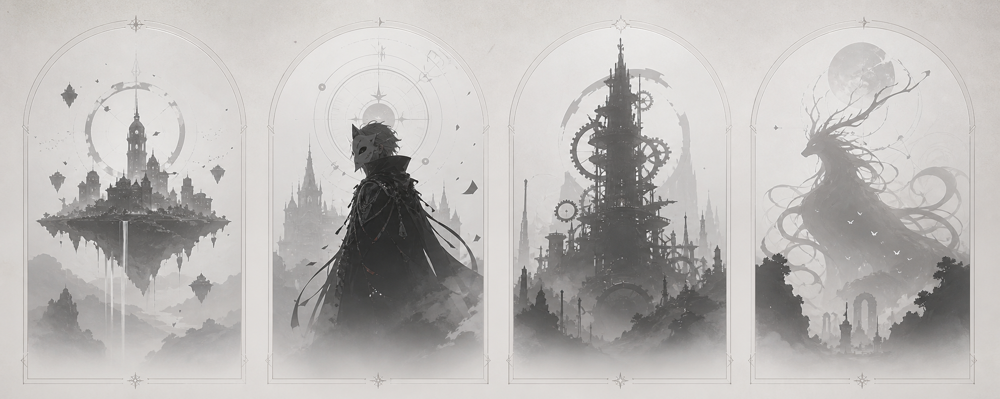

我们把 AI 生产力转化为可复用的游戏公司资产：IP、视觉、代码、宣发内容、数据和商业判断。Turning AI production capacity into reusable game company assets.
每一项素材、提示词、文件边界、API、测试结果和发布信号，都会沉淀为下一轮产品开发、合作接入和商业评估的基础设施。

原创 IP · Agent 生产系统 · 增长反馈
第三学院 OPC 以原创游戏 IP 为资产核心，以 Agent 生产系统提升内容开发效率，并通过可玩版本、视觉资产、协作机制和数据反馈持续扩大市场信号。
公司模型 Company Model
第三学院 OPC 将方向、预算、审美、监督、测试和最终决策集中在主理人手中；Agent 负责扩大生产半径，合作伙伴可以从内容、测试、技术、宣发和商业建议等环节进入。
每一项素材、提示词、文件边界、API、测试结果和发布信号，都会沉淀为下一轮产品开发、合作接入和商业评估的基础设施。
主理人决定产品组合、审美标准、风险边界、预算投入和商业优先级。
创意、资产、代码、测试和宣发被拆解成可执行、可复用、可评估的任务协议。
关键创意快速进入可体验版本，形成玩家反馈、合作讨论和投资观察窗口。
宣发成本、内容表现、社群反馈和营收潜力持续进入产品与预算决策。

旗舰 IP Flagship IP
《学术喵的奇幻之旅：樱花同济篇》讲述校园中的学术喵为了守护知识与校园秩序挺身而出，并在探索、战斗与学习中成长的故事。这个 IP 已经拥有主视觉、角色群像、地图资产、精灵动画和在线多人版本，为后续章节、社群测试、短视频宣发和商业合作提供了完整起点。
产品组合信号 Portfolio Signal
产品组合会作为公司长期资产建设。未来概念先以无色轮廓保留悬念，在不稀释首款产品注意力的前提下，向合作方展示长期原创世界储备和持续开发空间。

未来 IP 候选将根据产品节奏、社群兴趣和商业合作机会逐步公开。
合作对象 For Partners
第三学院 OPC 用可玩的产品、丰富的 IP 视觉、可复用的生产系统和可追踪的宣发数据对外沟通。
进入校园幻想世界，参与早期体验反馈，帮助 IP 找到更鲜明的游戏节奏和内容方向。
围绕关卡、角色、剧情、测试和宣发素材参与共创，并接入清晰的内容边界。
关注原创 IP 储备、Agent 生产效率、持续内容管线、成本结构和商业化选项。
投资逻辑 Investor Thesis
第三学院 OPC 的产品模型围绕具有长期世界观承载力的 IP 方向展开。Agent 生成并整合角色、关卡、剧情、地图、美术、视频和数据资产，每一次发布都会验证新的主题、玩法模块和受众反馈；表现良好的内容进入下一轮扩展，形成可复用资产持续增厚、内容边际成本逐步下降、商业化窗口不断增加的增长飞轮。
增长系统 Growth System
Agent 承担大部分执行工作，人类聚焦监督、试玩、审阅公共质量、判断合作机会，并决定产品组合和资源投入。
第三学院 OPC 欢迎能够带来产品反馈、内容模块、AI 工作流经验、游戏开发审阅、宣发渠道或早期市场洞察的合作伙伴。